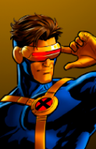
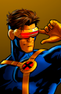
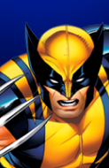
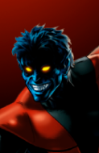
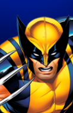
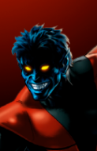

Jean Grey
Os poderes de Jean eram restritos a simples telecinese, e até mesmo levantar seu próprio peso rapidamente cansava ela.
Ciclope
Ele tem o poder de disparar rajadas ópticas por um acidente que aconteceu com ele quando criança, mas não consegue controlá-los.
Lince Negra
Ela tem o poder de atravessar matéria sólida,campos de energia,rajadas ópticas, continuando intacta,e também tem o poder de andar no ar
Tempestade
Tem o poder de controlar as forças da natureza, faz o clima variar entre seus extremos, muito poderosa ela pode produzir raios, chuvas, gelos, ventos, neblina, entre outros efeitos.
Wolverine
Wolverine é um dos mutantes mais importante e reconhecido da história dos X-Men
Noturno
Ele é um mutante que nasceu com cauda, orelhas pontudas, mãos com três dedos e pés com dois dedos.
Magneto
Ele tem o poder de magnetocinese, ou seja, controlar objetos de metal e criar campos magnéticos.
Vampira
Ela tem o poder de absorver a vitalidade e memória das pessoas que toca ou no caso dos mutantes os poderes e a memória, mas só temporariamente.
 


 


